Runde 1 blev afvist, fordi figurerne var for generiske og handlede om kørsel. Duo handler ikke om sprog, og Tolan handler ikke om AI. Derfor er de her valgt ud fra personlighed, silhuet og en verden, man har lyst til at være i.
Status på tegningerne: det er første udkast, tegnet og renderet af hver sin illustrator. Kritikerrunderne blev afbrudt af et brugsloft. Knur og Mira er ikke reviewet endnu. Tordis fik 5/10 af kritikeren, fordi kronen læses som en plante og ikke som flint. Vælg retningen ud fra idéen og silhuetten. Den valgte karakter får derefter den fulde polering.
En stjernemuldvarp, der aldrig har set himlen, og som er helt sikker på, at hun er undergrundens bedste astronom.
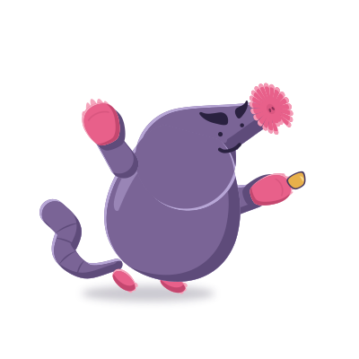
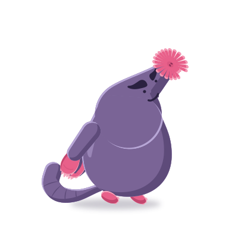
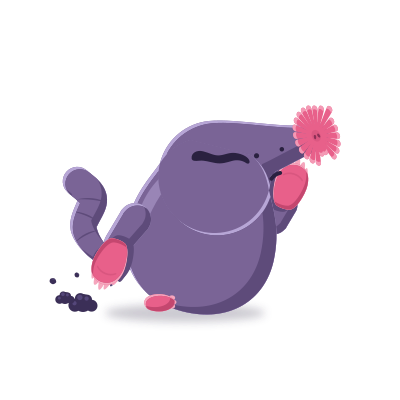
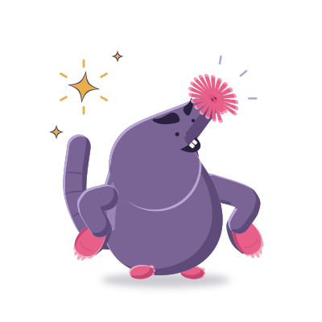
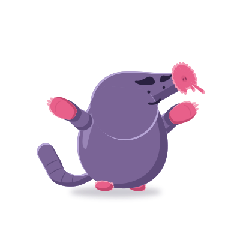
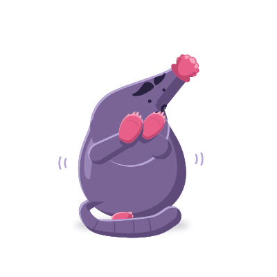
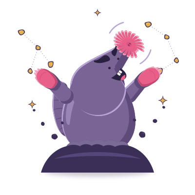
Hun er selvsikker langt ud over beviserne og helt i fred med det. Hun er varm og nørdet, taler med hænderne og bliver pludselig betaget midt i en sætning (“…det er smukt”).
Hun tager fejl om himlen hele tiden og skammer sig aldrig. Det er præcis den holdning til fejl, en elev har brug for. Jokes om hendes øjne er forbudt.
Hun bor under en plæne i Risskov. Hver nat stikker hun stjernen op for at mærke himlen og trykker så småsten op i loftet af sin gang, Himmelloftet.
I appen: du bliver hendes assisterende astronom. Hver lektion sætter en ny sten op, og hvert emne fuldender et stjernebillede (“Den Store Regnorm”, “Onsdag”). Når du består, kravler hun op sammen med dig og mærker den rigtige nattehimmel for første gang.
Gunnar er en regnorm og hendes nervøse bedste ven, der slår knude på sig selv. Hver mandag fornyer Mira løftet om ikke at spise ham, og det fungerer også som ugens påmindelse.
Else er en 23 år gammel vinbjergsnegl og pensioneret astronom med halvmånebriller. Hun står for den ugentlige opsummering.
Hajtænder betyder ubetinget vigepligt for alle på tværvejen, også cyklisten. Den sten sætter vi op i morgen.
I appen: hun passer til den varme natvisning (UI 1). Natkørsel får en mening, der ikke har noget med bilen at gøre: det er natten, hun drømmer om.
En rød knurhane fra Kattegat. Ansigtet siger “nå”. Vingerne siger “JAAA”.
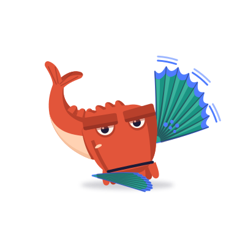
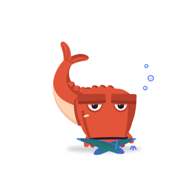
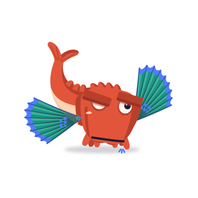
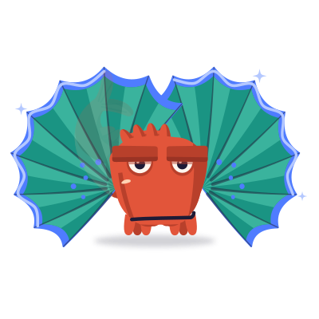
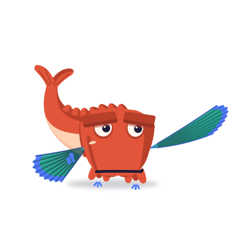
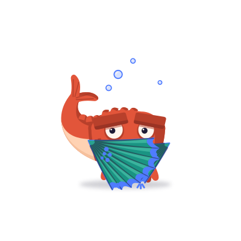
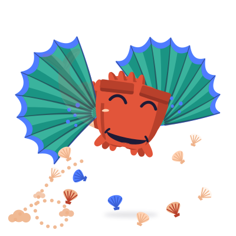
Han er deadpan, fåmælt og knurrende, med jysk underdrivelse: “Det ku' ha' været værre” er den højeste ros, han kan give. Skarpheden går altid ud over universet (koldt vand, vandmænd) og aldrig over dig.
Han er hemmelig romantiker. Hans ros føles fortjent, og det betyder noget for unge, der er allergiske over for falsk hype.
Han bor på en sandbanke 30 meter nede, hvor der altid er blåt tusmørke, og er “Kattegats strengeste anmelder”. Han giver karakter med én til seks fingre, og intet har nogensinde fået seks.
I appen: han gemmer i hemmelighed én skal i vingefolderne for hver lektion, du gennemfører, og benægter det. Når du består, folder han vingerne ud, og du ser dem alle.
Bent er en eremitkrebs, der er besat af boligmarkedet. Han hilser dig velkommen tilbage efter en pause: “Jeg er flyttet igen. Du er her stadig. Respekt.”
Rikke er en hestereje og en hype-maskine, der taler alt for hurtigt. Hun er vært for hurtige runder og streak-fejringer.
Hajtænder betyder ubetinget vigepligt for alle på tværvejen, også cyklisten. Det ku' du godt.
I appen: han står stærkest i den lyse dagvisning (UI 2). Den røde krop og turkise vinger giver appen en farvesignatur, som ingen konkurrent har.
En 66 millioner år gammel tordensten fra Stevns Klint, der overlevede meteoren og tager lynet for dig, når panikken slår ned.
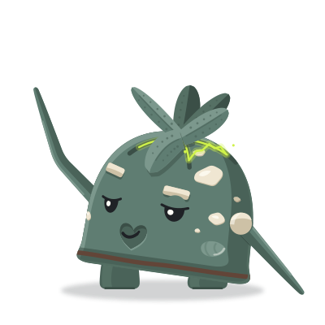
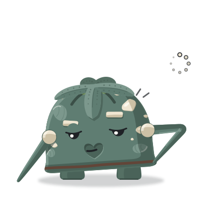
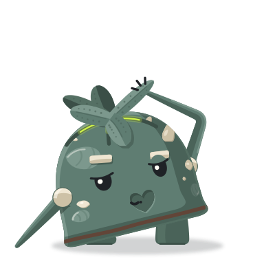
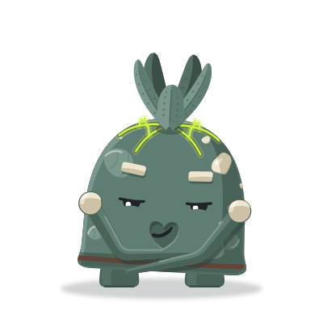
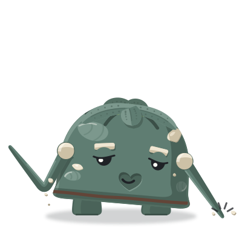
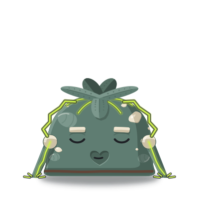
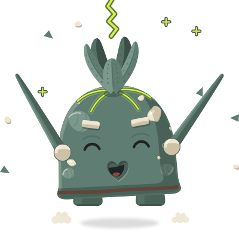
Hun er en udødelig hypokonder: hun går i panik over et loading-ikon, men trækker på skuldrene af meteoren (“den var værre”). Hun er tørt dramatisk og kalder kærligt mennesker “pattedyr”.
Fordi hun selv er nervøs hele tiden, prædiker hun aldrig. Hendes trøst er perspektiv: hun er flint udenpå og kridt indeni.
Hun var et hjertesøpindsvin i kridthavet, blev til flint og lå og tænkte i 66 millioner år. En fisker lagde hende i vindueskarmen som tordensten, og hun tog jobbet dødsensalvorligt. De fem gnistrende riller er arrene efter lynene.
I appen: streak uden skyld. Springer du dage over, forstener hun langsomt, men hun kan aldrig dø. Kronen åbner sig, jo mere klar du bliver.
Kile er en forstenet belemnit (“tordenkile”), hyperaktiv og utålmodig. Han er vært for hurtige runder og den eneste, der får Tordis til at virke rolig.
Ragna er en ravklump, der vogter gentagelseskøen, for rav glemmer intet. Små indkapslede prikker i hende er spørgsmål, du skal se igen, og de lyser, når de er klar.
Hajtænder betyder ubetinget vigepligt for alle på tværvejen, også cyklisten. Meteoren var værre.
I appen: hun er den mest danske af de tre (Stevns Klint og tordensten er ægte folketro) og den stærkeste mod prøvenerver. Flintgrøn og lime virker både lyst og mørkt.
| Koncept | Score | Status |
|---|---|---|
| Mira Muld (stjernemuldvarp) | 22 | Valgt |
| Knur (knurhane) | 22 | Valgt |
| Tordis (tordensten) | 20 | Valgt; personlighed podet fra Mos (bjørnedyr, 20) |
| Skår (levende keramikskår med guldsøm) | 20 | Fravalgt: kintsugi er en wellness-kliché, og silhuetten læses som et skjold |
| Mos (bjørnedyr) | 20 | Fravalgt: allerede et internet-meme; personligheden lever videre i Tordis |
| Bodil (rokke) · Knud (snog) | 19 · 19 | Fravalgt: ligner Mr. Ray/Mantine, og slanger giver fobi-risiko |
| Skrub · Plet (fladfisk) | 18 · 15 | Fravalgt: læses som et blad ved 32 px og ligner Stunfisk |
| Blære (blæretang) · Tamp (reb-knude) · Knud (nervebundt) | 17 · 17 · 14 | Fravalgt: svage silhuetter, uheldige associationer, for barnligt |
Derefter laver jeg det fulde udtryksark (også streak, level-up og savnet-en-dag), opsætningen til Rive-rig og integrationen i appen.